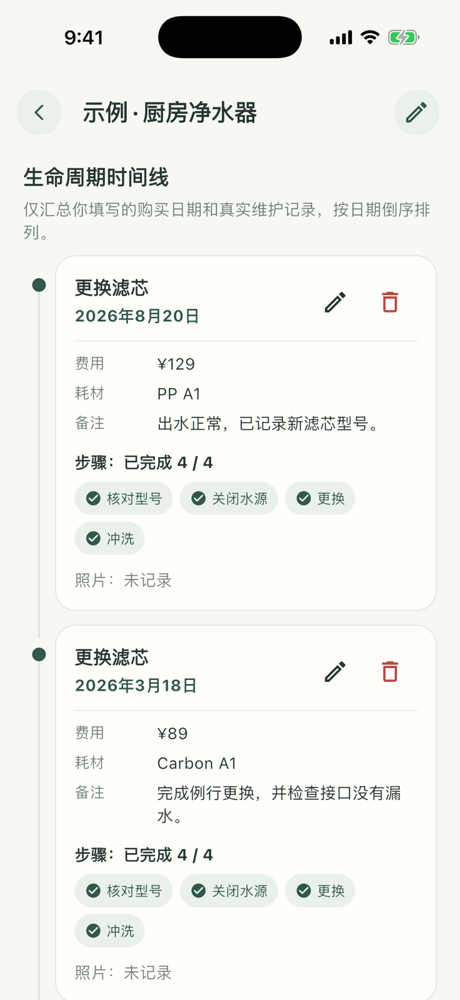
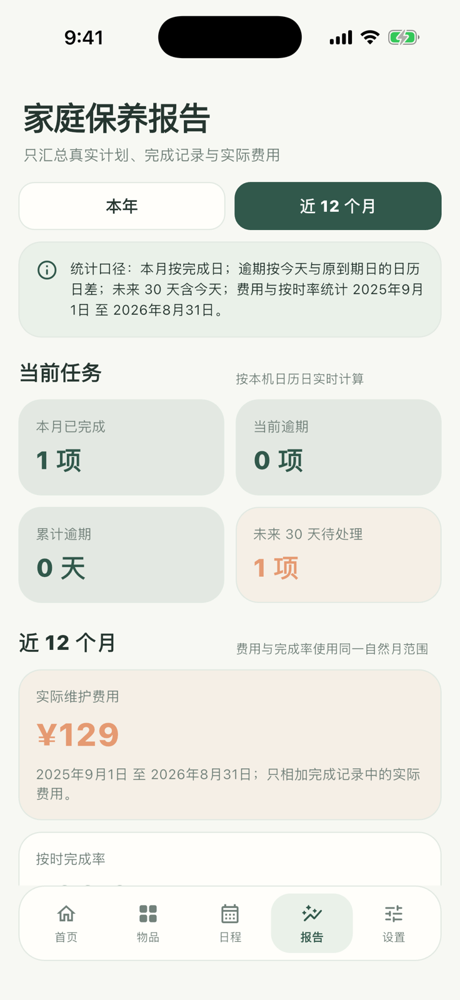

04 · 从真实完成记录回看
回看记录与成本
完成记录会留在对应物品的生命周期中；报告页只汇总真实计划、完成日期和实际费用。


- 1
查看单件物品历史
打开净水器详情，在生命周期中查看计划、完成日期、步骤、费用、耗材和照片。
- 2
打开家庭保养报告
前往“报告”，切换近 12 个月或本年度范围。
- 3
切换费用维度
按物品查看每件物品的支出，或按类别了解家电、耗材等费用去向。
- 4
回到原始记录核对
从费用明细打开对应物品，核对这次保养留下的真实信息。
04 · 从真实完成记录回看
完成记录会留在对应物品的生命周期中；报告页只汇总真实计划、完成日期和实际费用。


打开净水器详情，在生命周期中查看计划、完成日期、步骤、费用、耗材和照片。
前往“报告”，切换近 12 个月或本年度范围。
按物品查看每件物品的支出，或按类别了解家电、耗材等费用去向。
从费用明细打开对应物品，核对这次保养留下的真实信息。